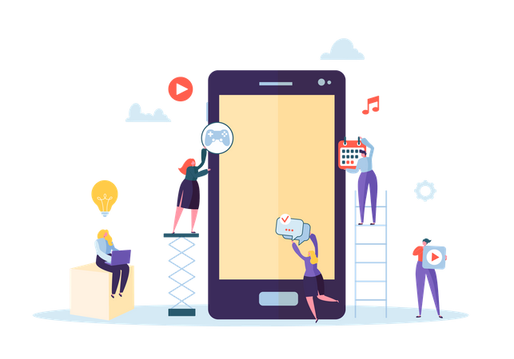

From ideas to app
The creation of an application, whether web or mobile hybrid, will allow you to have a tool tailored to your customers, fast and intuitive with features that meet all your expectations.
Freelance Minded
I approach all my projects, regardless of the project size, with a kick-off discovery session to understand my client’s vision, the business objectives and what the user data is indicating. I’ve trained myself to make a quick usability test the moment I open a new website or an app, so this comes almost for free during our first meeting.